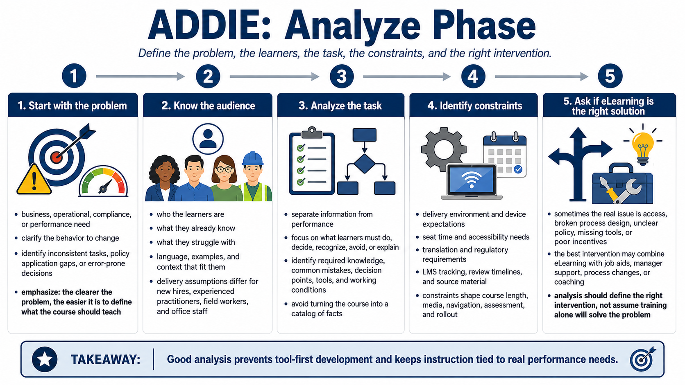

Analyze - Understanding the Learning Need
Connecting to LMS... Progress: in progress

Narration
The Analyze phase asks why the course should exist. Start with the business, operational, compliance, or performance problem. Is there a behavior that needs to change? A task that is performed inconsistently? A policy that learners must apply? A decision that causes mistakes? The clearer the problem, the easier it becomes to decide what the course should teach.
Audience analysis is central. Identify who the learners are, what they already know, what they struggle with, what language or examples will make sense to them, and what constraints affect their participation. A course for new hires needs different pacing than a course for experienced practitioners. A course for field workers may need different delivery assumptions than a course for office-based staff.
Task analysis separates information from performance. People may need information, but training is usually justified because people need to do, decide, recognize, avoid, or explain something. Breaking down the task helps identify required knowledge, common mistakes, decision points, tools used, and the conditions under which performance happens. This prevents the course from becoming a catalog of facts.
Analysis also includes constraints: delivery environment, device expectations, seat time, accessibility needs, translation needs, regulatory requirements, LMS tracking, review timelines, and available source material. These constraints are not administrative trivia. They shape course length, media choices, navigation, assessment, and rollout.
Finally, analysis should ask whether eLearning is the right solution. If the problem is lack of access, broken process design, unclear policy, missing tools, or poor incentives, a course alone may not fix it. ADDIE is strongest when it helps the team define the right intervention, even when that intervention includes job aids, manager support, process changes, or coaching in addition to eLearning.